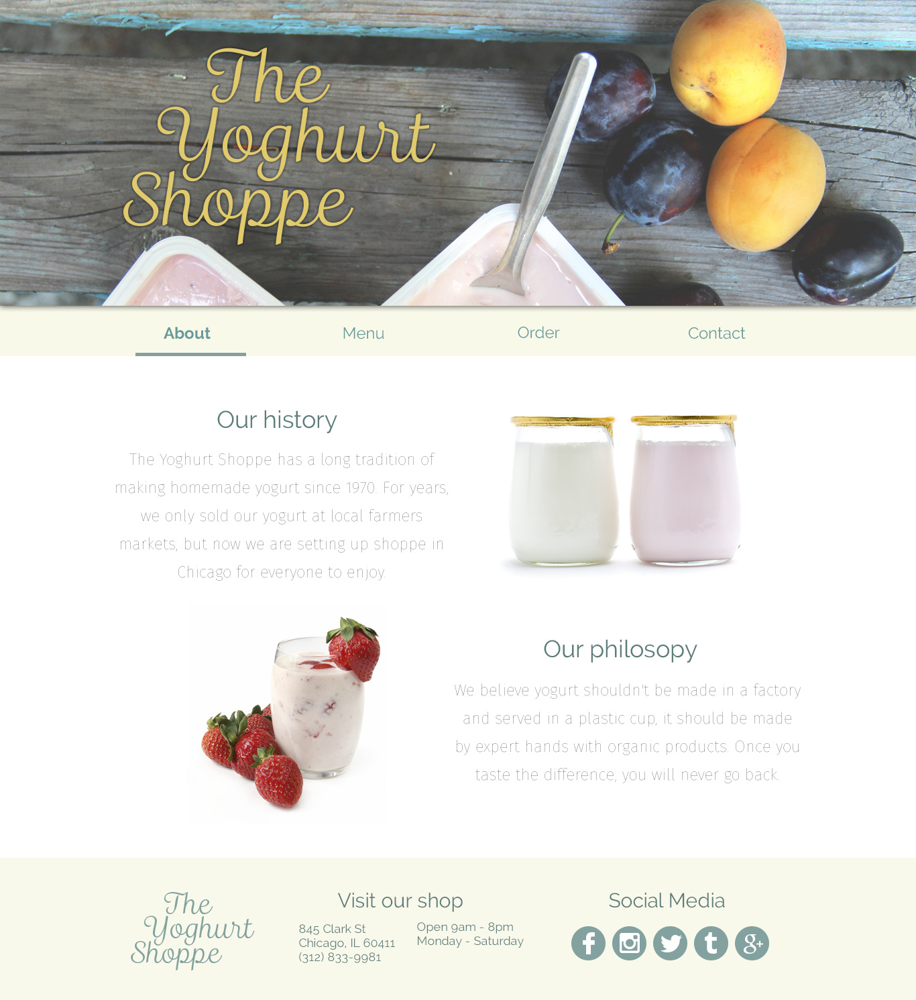

As a project for DESIGNATION, I was asked to design the website for a fictional yogurt store called The Yoghurt Shoppe. Using locally sourced ingredients, The Yoghurt Shoppe lets customers create premium, homemade yogurt cups for a reasonable price. They are targeting health concious foodies and want to leverage strong customer loyalty to move on to other hip neighborhoods in Chicago.
Not wanting to be associated with frozen or brand name yogurts, The Yoghurt Shoppe is looking to emphasize a homemade feel, yet still modern and clean like their ingredients. They are open to a premium look, something fun and light-hearted, or a combination of both.
Final logo
In order to really highlight a handmade and premium feel, I chose a script font for my final logo. The custard color enforces the idea that the yogurt is natural and creamy instead of preserved and frozen.
Final screens
I kept the about page very clean, telling customers about The Yoghurt Shoppe's history and culture. I used light pastel colors for a premium, yet friendly feel which simultaneously complements the bright pictures of fruit on all of the screens.

With the menu screen, I tried to emphasize the photography, placing them prominently in the center.
The order screen was designed with simplicity in mind. Pricing is made clear right away and it's obvious when options are selected. Finally, the main call to action is highlighted with the same color used in the logo.